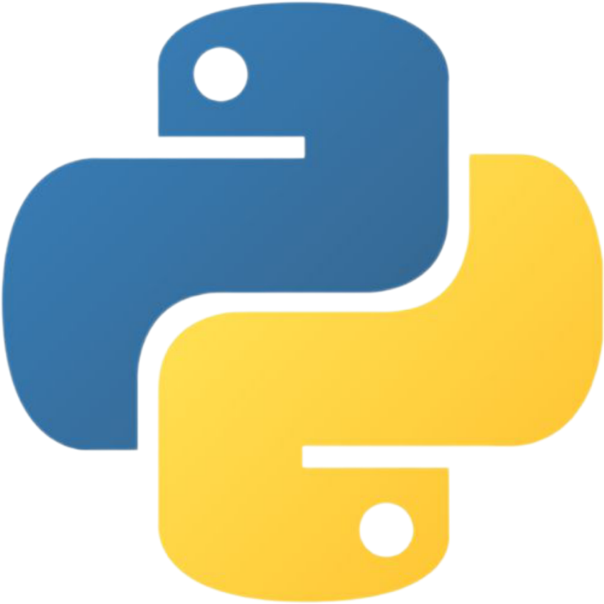
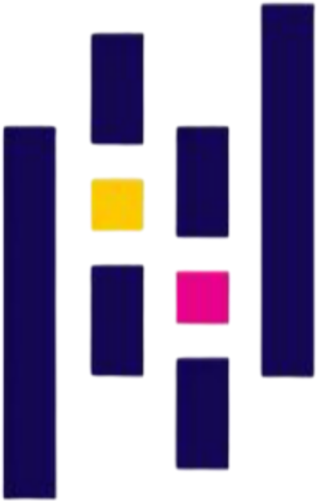
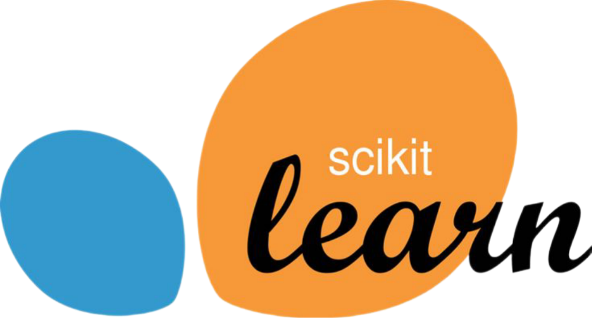
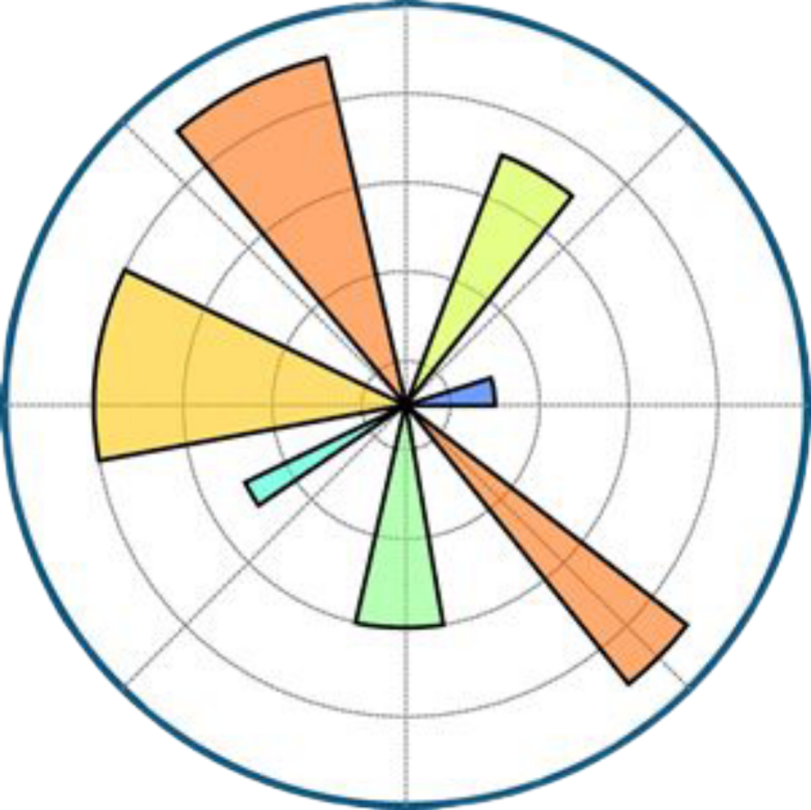
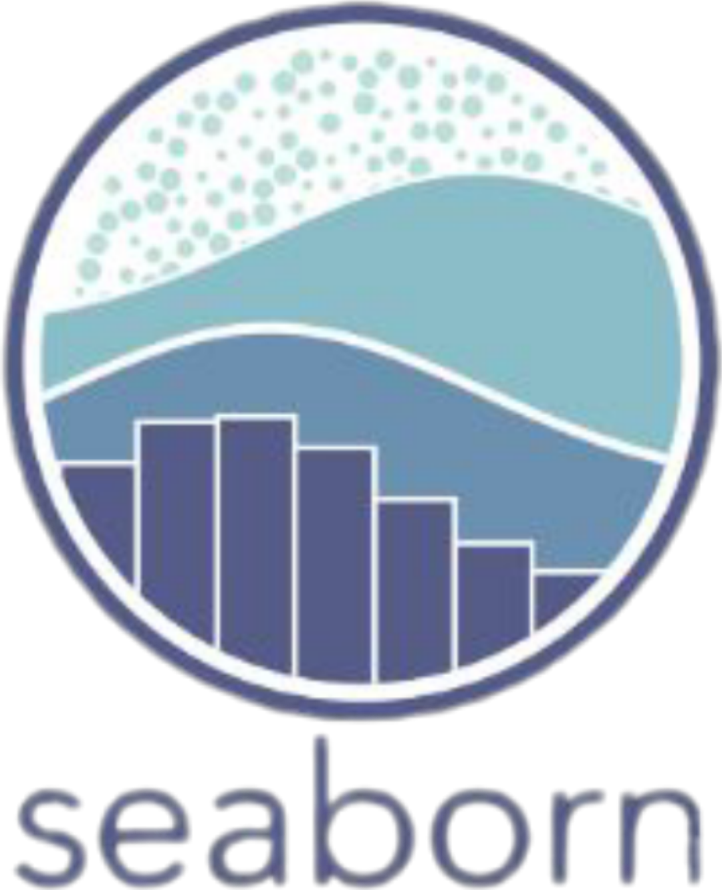
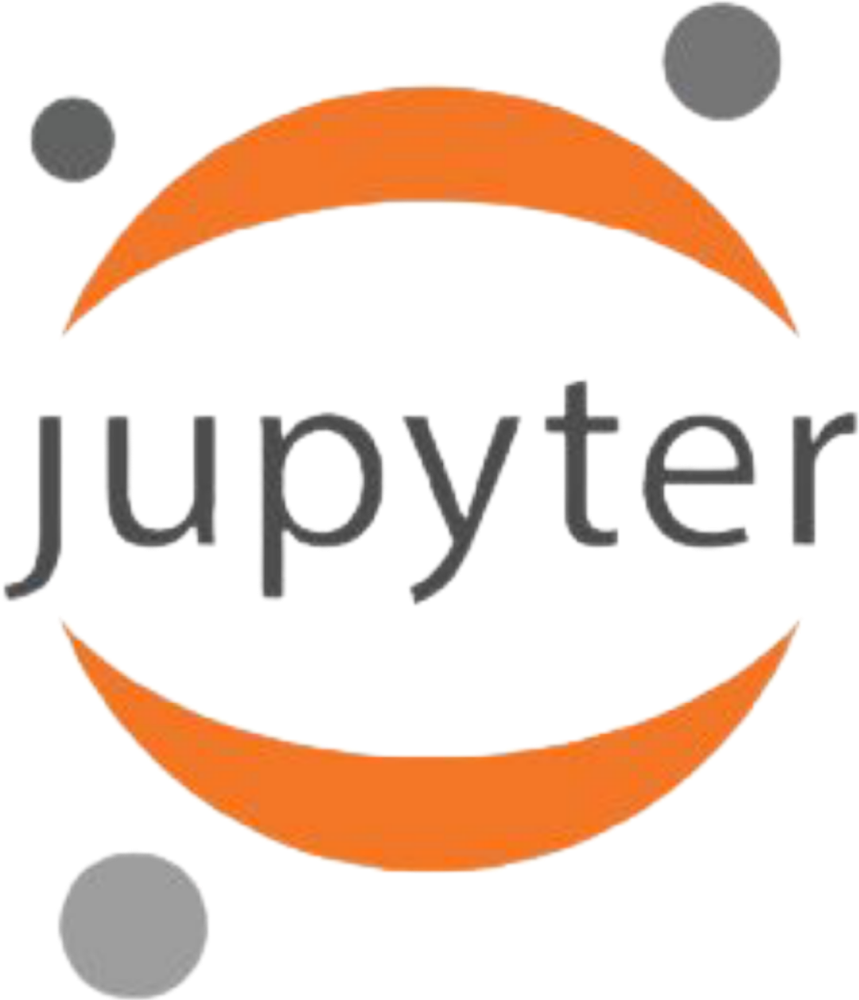

⌕
Exploratory analysis
Inspect the dataset, examine feature distributions and explore relationships between diagnostic measurements.
01 — Classification · Python · Scikit-learn
Exploring diagnostic data through machine learning. An educational classification project using Logistic Regression, feature scaling and model evaluation.
Python • Data Analysis • Supervised Learning
A structured machine learning workflow built to demonstrate classification, preprocessing and evaluation.
Inspect the dataset, examine feature distributions and explore relationships between diagnostic measurements.
Prepare training and test data, scale numerical features and train a Logistic Regression classifier.
Assess test performance using accuracy, a classification report and a confusion matrix.
Four stages that connect data preparation to evaluation.
Load and inspect diagnostic features and target labels.
Stratified split and feature scaling within the model pipeline.
Fit a Logistic Regression classification model on training data.
Measure held-out performance and inspect classification errors.
Reported results from the notebook's held-out test set. Metrics describe this split, not guaranteed real-world performance.
Tools used for analysis, model development and visualization.







Explore the implementation and documentation behind the project.
Explore the code, analysis, model evaluation and notebook outputs.
OPEN NOTEBOOK ↗Read the project overview, dependencies and setup instructions.
READ README ↗Discover more work and repositories on my GitHub profile.
VISIT GITHUB ↗